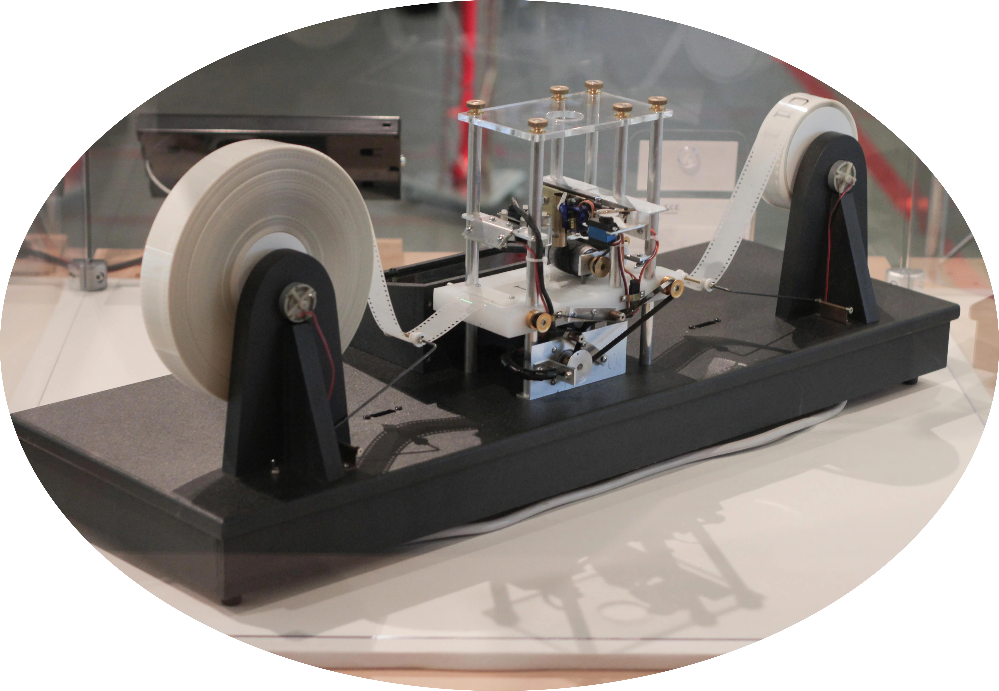

计算理论基础：语言和图灵机
什么是图灵机

是的，我决定先讲图灵机而非语言
图灵机是图灵发明的一个数学模型；通常，它被描述为在一条两端都无限长的纸带上工作的一台机器。图灵机存有一个内部状态，每一个运行时间内，图灵机会根据当前纸带上的内容和内部状态，决定如何改变纸带内容、内部状态以及下一步向左或是向右。如果图灵机当前的状态没有规定如何处理纸带内容，那么图灵机“停机”，如果图灵机停机在预先设定好的状态中，就说图灵机“接受”了当前输入。
更正式地，我们用一个七元组 $M=\langle Q,\Gamma,b,\Sigma,\delta,q_0,F\rangle$ 描述一个图灵机：
- $Q$ 是一个有限非空的状态集合；
- $\Gamma$ 是一个有限非空的磁带字母表；
- $b\in \Gamma$ 是空字符，在磁带上无限频繁地出现；
- $\Sigma\subseteq(\Gamma\setminus \{b\})$ 是输入符号集，可以出现在初始磁带上作为输入的字符；
- $q_0\in Q$ 是初始状态；
- $F\subseteq Q$ 是接受状态，如果图灵机在某个接受状态停机，就说初始磁带上的内容被图灵机接受；
- $\delta: (Q\setminus F)\times \Gamma \not\to Q\times\Gamma\times\{\text{L},\text{R}\}$ 是一个被称作转移函数的偏函数1，若 $\delta$ 在当前状态下未定义，图灵机停机。
图灵机从初始状态与纸带起点起，每次根据当前的内部状态 $x$ 和当前磁针指向的纸带上的单元格中的字符 $y$ 进行操作：若 $\delta(x,y)$ 没有定义则停机，否则若 $\delta(x,y)=(a,b,c)$，则将内部状态修改为 $a$，将磁针指向的格子中的字符修改为 $b$，若 $c$ 为 $\text{L}$ 则向左移动一格，为 $\text{R}$ 则向右移动一格。一个不太常见的变体允许“无偏移”，通常用 $\text{N}$ 表示，作为方向集 $\{\text{L},\text{R}\}$ 的第三个元素。
图灵机的输出用 $M(x)$ 表示，$M(x)=1$ 当且仅当 $M$ 接受 $x$；$M(x)=0$ 当且仅当 $M$ 在有限步内停机且 $M$ 不接受 $x$。
语言
容易理解的是，对于输入符号集 $\Sigma$ 构成的串的集合 $\Sigma^{\ast}$，只有一部分（或者全部）可以让图灵机接受，这一部分构成 $\Sigma^{\ast}$ 的一个子集，记为 $L$。我们把集合 $L$ 称为字母表 $\Sigma^{\ast}$ 上的一个语言。
判定性问题
反过来说，给定一个字符集上的一个语言，要求图灵机接受所有属于这个语言的串，这种问题被称为判定性问题。
功能性问题
功能性问题的答案不止 YES/NO，可以是一个串或其他；例如，求两个数的和是一个功能性问题。
判定问题也可以转化为一个功能性问题：求这个问题的指示函数。
计算机器的局限
一个振奋人心的猜测是，对于所有问题（至少是判定问题），我们总能设计一个图灵机，使得这台图灵机可以解决这个问题。遗憾地是，将会看到，这个猜测是错误的。
图灵机的编码
图灵机可以被自然数编码，即存在满射函数 $f:\mathbb{N}\to \mathbb{M}$。每个自然数都对应一个图灵机，每个图灵机都有无数个编码。因此，由图灵机构成的集合可以看做一个语言。
$M_\alpha$ 表示自然数 $\alpha$ 编码的图灵机。
通用图灵机
存在一台图灵机 $\mathcal U$ 满足：
- 若 $M_{\alpha}$ 在输入 $x$ 下在有限时间内停机，则 $\mathcal{U}(x, \alpha)=M_{\alpha}(x)$，否则 $\mathcal{U}(x, \alpha)$ 不会在有限时间内停机；
- 如果对于任意 $x\in\{0, 1\}^\ast$，$M_\alpha$ 在输入 $x$ 下在 $T(|x|)$ 时间内停机，则对于任意 $x\in{0, 1}^\ast$，$\mathcal{U}(x, \alpha)$ 在 $O(T(|x|)\log T(|x|))$ 时间内停机。
即：存在一台通用图灵机，它能模拟任何一台图灵机，且花费的时间只会比这台被模拟的图灵机慢其运行时间的对数。
图灵不可计算问题
有了以上两条知识，我们可以对“可计算性”给出一些解释。
对于一个判定问题，若存在一个总是在有限步内停机且能够正确进行判定的图灵机，则这个问题是一个图灵可计算的问题，否则这个问题是一个图灵不可计算的问题。
很多人听说过“停机问题”，那是一个经典的图灵不可计算问题；不过，构造并证明它图灵不可计算并非最简的证明方式。
一个非常简短的说明如下：图灵机可以被自然数编码，因此图灵机的个数是可数无穷；而语言的个数（显然等价于二进制串集合的个数2，即自然数的幂集中元素的个数）是不可数无穷。由于一个图灵机只能判定一个语言，故存在图灵不可计算的问题。
停机问题
停机问题是一个经典的图灵不可计算问题：给定 $\alpha$ 和 $x$，判定 $M_{\alpha}$ 在输入为 $x$ 时是否会在有限步内停机。
定义函数 $\mathsf{UC}:\{0,1\}^{\ast}\to \{0,1\}$ 为： $$\mathsf{UC}(\alpha)=\begin{cases}0,&M_\alpha(\alpha)=1\\1,&\text{otherwise}\end{cases}$$
先证 $\mathsf{UC}$ 函数是图灵不可计算的：若存在 $M_{\beta}$ 可以计算 $\mathsf{UC}$ 函数，则 $M_{\beta}(\beta)=\mathsf{UC}(\beta)$；但是由 $\mathsf{UC}$ 的定义，$\mathsf{UC}(\beta)=1\Leftrightarrow M_\beta(\beta)\ne 1$，矛盾！
令 $M_{\mathsf{HALT}}$ 是一台可以解决停机问题的图灵机，$M_{\mathsf{HALT}}(x,\alpha)$ 的值是判定图灵机 $\alpha$ 是否会在输入 $x$ 时在有限步内停机。那么，可以构造一台计算 $\mathsf{UC}$ 的图灵机：$M_{\mathsf{UC}}$ 先调用 $M_{\mathsf{HALT}}$，若 $M_{\mathsf{HALT}}$ 输出 $0$，则输出 $1$；否则，使用通用图灵机模拟计算得到答案。由于$\mathsf{UC}$ 是图灵不可计算的，停机问题也是图灵不可计算的。
其他型号的机器
为了更深入地研究问题，人们还设计了许多具有其他功能的机器，不过其中有一部分被证明与图灵机的计算能力相同。
有趣的是，即使被设计得看似十分强大的机器，也无法解决自己的停机问题。私以为这具有逻辑上奇妙的美感。
非确定性图灵机
非确定性图灵机与普通的图灵机相比，它的转移函数 $\delta$ 可以是多值的。一个很酷的解释是：非确定性图灵机在每次转移时将会“同时”进行若干种不同的转移——就像平行宇宙一样——从而在这些分支“并行”计算。如果“平行宇宙”中一个图灵机在接受状态停机，整台非确定性图灵机就看做接受了这个输入。
另一个解释是：非确定性图灵机在每次转移时将会“运气极好”地选择将在最少步内接受并停机的分支。
相对地，普通的图灵机也叫做确定性图灵机。
实际上，任何确定性图灵机可以用迭代加深的形式在指数级时间模拟一台非确定性图灵机多项式时间内的行为。
也有定义设定了显式拒绝状态，但是仅当非确定性图灵机在所有分支均拒绝时，才能认为整台非确定性图灵机拒绝。
计算机
图灵机与冯·诺依曼计算机解决问题的时间复杂度差别在多项式级别内。
多磁带图灵机
标准的图灵机只能在一条纸带上进行操作；对于一个 $k$ 带图灵机，其中一条纸带是只读的输入带，而剩下的 $k-1$ 条纸带可以进行读写，并且这 $k-1$ 条纸带中还有一条纸带用作输出。
多带图灵机的纸带数必须是有限的。
尽管多带图灵机直观上更加强大，实际上标准图灵机只需多二次（$n^2$）的时间即可模拟多带图灵机。
概率图灵机
概率图灵机拥有两个转移函数，在每次转移时以独立平等的概率（可以看做抛硬币）选择其中一个——但是没有平行宇宙！
直观地，在给定的输入和指令状态机上，它可能具有不同的运行时间，或者它可能根本不停止；此外，它可以在一个执行中接受一个输入，而在另一个执行中拒绝相同的输入。
OI 中，不少算法基于概率，比较经典的例如对大整数的 Miller-Rabin 算法。不过，我们一般可以对成功率进行估计。
比较理想的情况是：机器可能接受不属于语言 $L$ 的串，但不拒绝属于 $L$ 的串，并且不会不停机；这样我们可以多次运行来保证正确性。
谕示机
这种机器相比其他构造更有神秘色彩。谕示机定义了一个黑盒，它可以在一次运算时间内解决一个特定问题，这个问题可以是任何复杂度类，甚至是图灵不可计算问题。
具有停机问题的预言机的机器可以确定特定的图灵机是否会在特定的输入上停止，但通常它不能确定与自身等效的机器是否会停止。